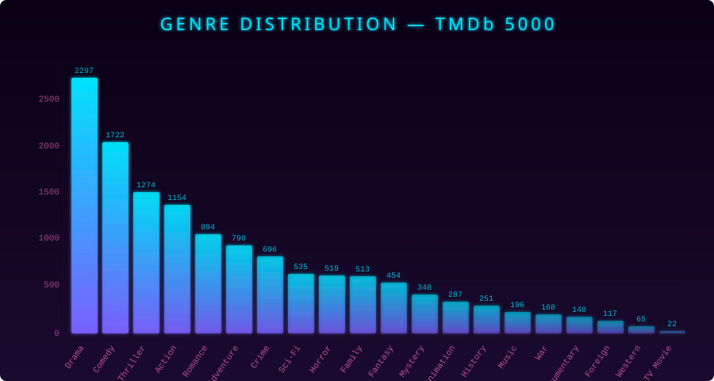

// WHAT IS THIS
Give it a movie you love, and it returns 5 films you'll probably love too. Built on the TMDb 5000 dataset, it matches directors, actors, plot keywords, and genres through nearest-neighbor search, then ranks candidates by popularity and release proximity.
// THREE STRATEGIES
Content-Based
Builds a binary feature matrix from director, cast, keywords, and genres. Finds the 31 nearest neighbors using Euclidean distance.
Popularity-Weighted
Scores neighbors using IMDB² × φ(votes) × φ(year) — Gaussian weighting that favors well-rated films from the same era.
Sequel Detection
Fuzzy string matching via Levenshtein distance deduplicates franchise entries, so you don't get three sequels back.
// HOW IT WORKS
- Load the TMDb 5000 movies and credits CSVs
- Clean keywords via NLTK stemming and WordNet synonym merging (9,474 → 2,121 unique keywords)
- Vectorize each film as a binary feature vector (director + 3 actors + keywords + genres)
- Search for the 31 nearest neighbors using Euclidean distance
- Rank candidates by IMDB² × Gaussian(votes) × Gaussian(year)
- Deduplicate sequels via fuzzy title matching, return top 5
// GENRE DISTRIBUTION
The dataset spans 20 genres across 4,803 films. Drama and Comedy dominate, while Western and TV Movie sit at the long tail.

// QUICK START
# Install dependencies
pip install numpy pandas scikit-learn nltk thefuzz python-Levenshtein
# Run the engine
python src/recommend.py --movie "The Dark Knight Rises"
# Without sequel deduplication
python src/recommend.py --movie "Pirates of the Caribbean" --no-dedup# Compile (zero external crates)
rustc src/recommend.rs -o recommend
# Run
./recommend --movie "The Dark Knight Rises" --data-dir data# Create project and run
dotnet new console -o recommend-engine
cp src/Recommend.cs recommend-engine/Program.cs
cd recommend-engine
dotnet run -- --movie "The Dark Knight Rises" --data-dir ../data# Run directly
go run src/recommend.go --movie "The Dark Knight Rises" --data-dir data
# Or build first
go build -o recommend src/recommend.go
./recommend --movie "The Dark Knight Rises"// EXAMPLE OUTPUT
Recommendations for: The Dark Knight Rises (2012)
============================================================
1. The Dark Knight (2008) — IMDB: 9.0
2. Batman & Robin (1997) — IMDB: 3.7
3. Kick-Ass (2010) — IMDB: 7.7
4. Hitman (2007) — IMDB: 6.2
5. Running Scared (2006) — IMDB: 7.4// DATASET
Built on the TMDb 5000 Movie Dataset containing 4,803 movies with budget, revenue, genres, keywords, and ratings, plus 4,803 credit entries with full cast and crew data.